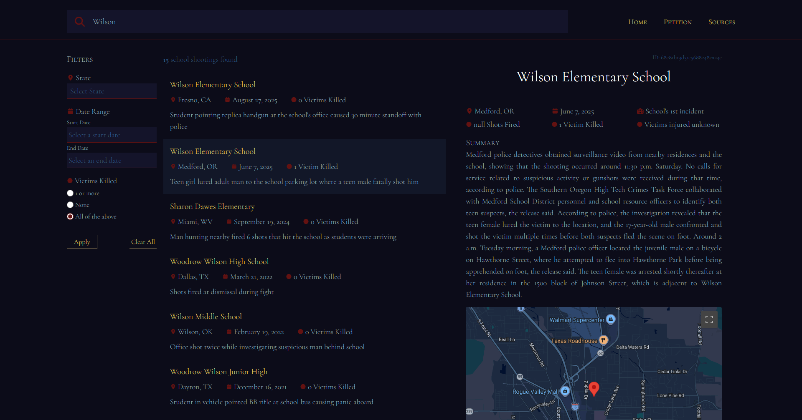
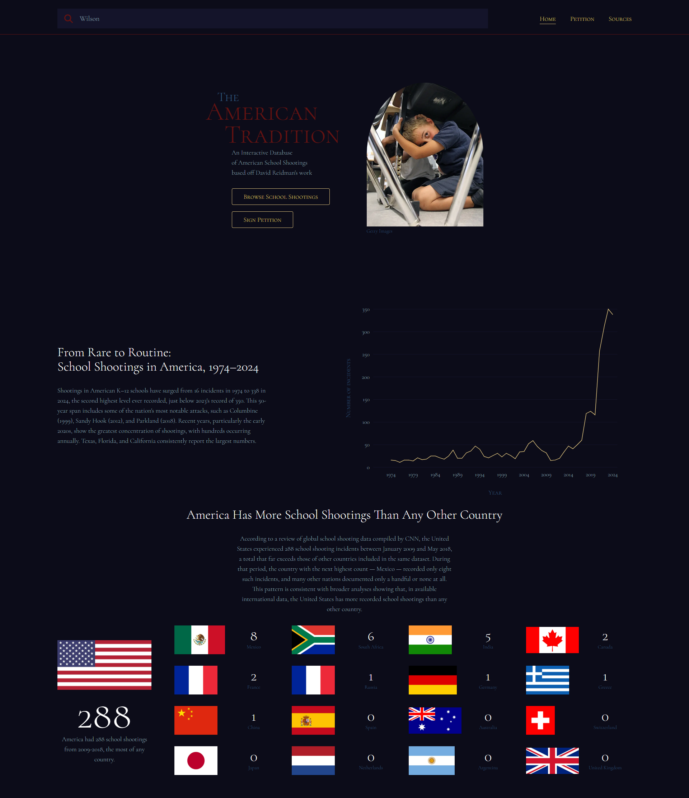

The search page of the web app.
In this web app, users can explore school shooting incidents across the U.S. through a searchable database and data visualizations. This project uses publicly available data from David Riedman’s K–12 School Shooting Database.
This project was created during a period of heightened public attention around school shootings in the United States, following an incident in the summer of 2025 that reinforced the severity of gun violence in spaces traditionally considered safe.
While high-level statistics are widely available, it remains difficult to explore individual incidents in a searchable way. This project was motivated by the need to support deeper understanding at an individual level and encourage reflection and engagement with an ongoing American issue.
Existing public resources on American school shootings focus on high-level statistics and data visualizations. They lack centralized access to detailed information of individual incidents. Exploring specific cases is necessary to examine the nuances that are lost in aggregated data, and it allows users to develop a more comprehensive understanding of the issue.
This project is designed for people who want to understand the reality of school shootings in the United States beyond headlines, including those who may lack awareness into the frequency and normalization of these incidents.
The project followed an iterative, research-based design process. In the absence of primary user research, decisions were guided by established UX heuristics and accessibility standards.
I wanted to be clear about my position from the start: school shootings are a uniquely American problem. The opening title, imagery, and data visualizations make that claim immediately visible.
I also didn’t want to mislead users into thinking this project is a purely neutral or objective data resource. While the data itself is factual, the project was created with advocacy in mind. Making that stance clear upfront felt important, especially for users who may be looking for an academic or fully objective dataset.
I avoided graphic imagery to remain respectful toward victims and affected communities, choosing instead to let the emotional weight of the project come from the data itself. I selected a stock image depicting a student participating in a lockdown drill to reflect the normalization of school violence, without directly showing harm.
To convey gravity and encourage reflection, I cropped the image in an arc shape. Its symbolism allowed me to acknowledge loss and seriousness without depicting violence or exploiting trauma.
I based the colour palette on American colours to reinforce the national context of the data, since the incidents are specific to the United States. I chose darker, muted shades to reflect the seriousness and sombreness of the issue. This approach allowed the interface to signal cultural context without evoking patriotism or celebration.
I avoided detailed victim-count filters because I didn’t want incidents to be compared by death toll. Every incident represents harm, regardless of how many people were killed. I didn’t want the design to suggest that one incident is more meaningful than another because of the number of fatalities.
For highly sensitive data points, I avoided expressive icons (e.g. skull, dove, gun, etc.) to prevent gamification or aestheticizing harm. Neutral symbols present the data respectfully.
This project is still in progress. While essential data searching features have been implemented, the landing page and resources page are still being expanded.

Homepage